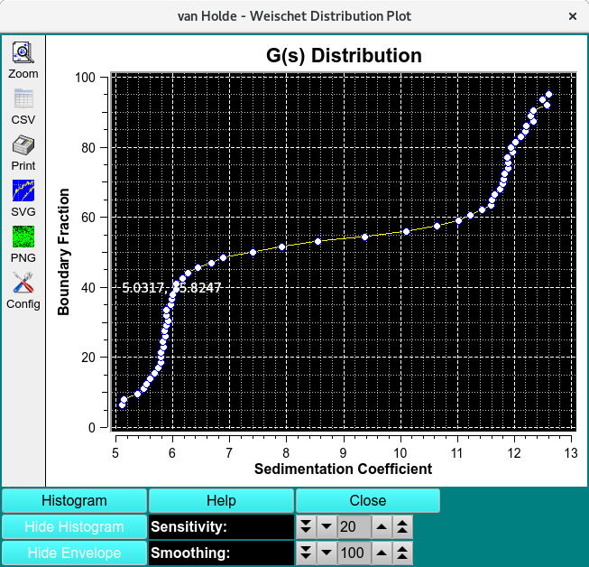
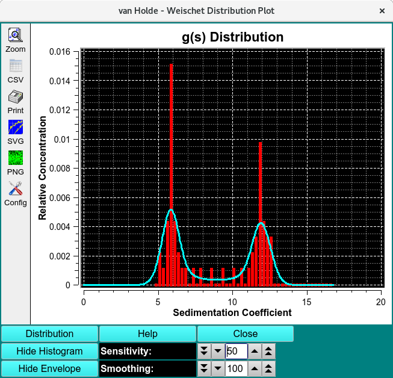

UltraScan vHW Distribution Plot¶
In the van Holde - Weischet (vHW) Enhanced program, there is a Distribution Plot option that brings up a dialog in which the vHW analysis data is displayed as a distribution plot or a histogram plot. In either case, a clustering of data around several sedimentation coefficient points indicates the presence of multiple species in the solution.

Functions¶
Histogram |
Click on this button to change the plot from Distribution to Histogram. |
Distribution |
Click on this button to change the plot from Histogram to Distribution. This is the alternate label to the same button as above. |
Hide Histogram |
Select hiding the histogram, showing only an envelope. The alternate label for this button is * Show Histogram |
Hide Envelope |
Select hiding the envelope, showing only a histogram. The alternate label for this button is * Show Envelope |
Sensitivity |
Change the sensitivity factor up or down to primarily affect the nature of the histogram. |
Smoothing |
Change the smoothing factor up or down to primarily affect the nature of the envelope. |
Help: |
Display detailed vHW Distribution/Histogram Plot help. |
